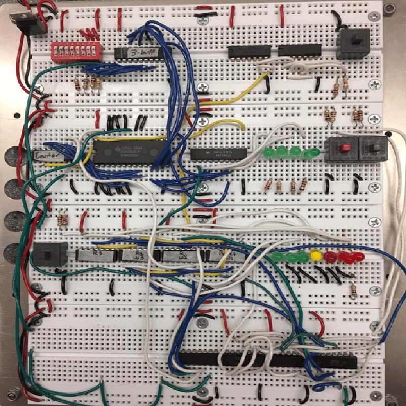

Completed Dec 2016
This was a project for a second-year desing course at UVic. The alarm clock features an stm32f407 microcontroller attached to a custom-made PCB. The PCB features an amplifier circuit to play MP3 files from a USB attached to the microcontroller. The alarm can be set in either 12 or 24-hour mode, has features to snoonze, set, and enable/diable the alarm, and has a 3D printed face plate. All the firmware for the prject was written in C.
The goals for the project were to have a fully functional product that was small, easy to use, and was realatively cheap to manufacture. The initial circuits for the project were designed using KiCAD EDA which were then transfered into a PCB schematic. The apmplifier circuit used an INSERT OPAMP HERE and used a 0-10k ohm potentiometer as a variable resisitor to control the volume. The seven-segment display featured modes for both 12 and 24-hour clocks which was directly fed from mincrocontroller.
The PCB ws designed on KiCAD EDA and was pritned by Alberta Printed Circuits. The footprint of the design was minimized as much as possible but also to allow room for the components to be soldered onto the board. Each portion of the circuit was segmented into its own area of the PCB with all the push buttons occupying the top, microcontroller the middle, opamp circuit on the left, and the seven-segment isplay on the right. Rows of ressitors and capacitors were aligned on the board to be asthetically pleasing as the design was to be disnged to be a commercial product.
The firmware for the project